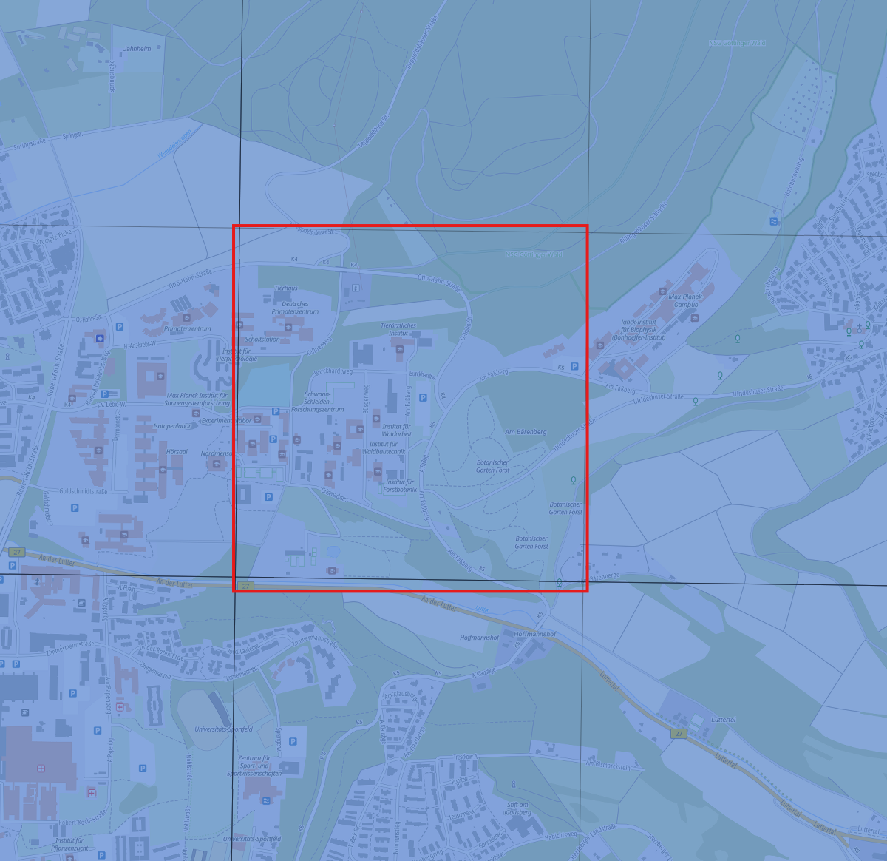
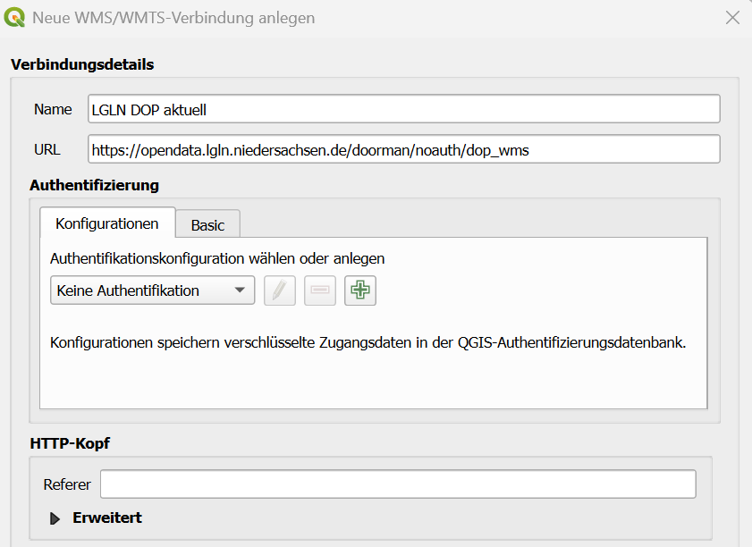
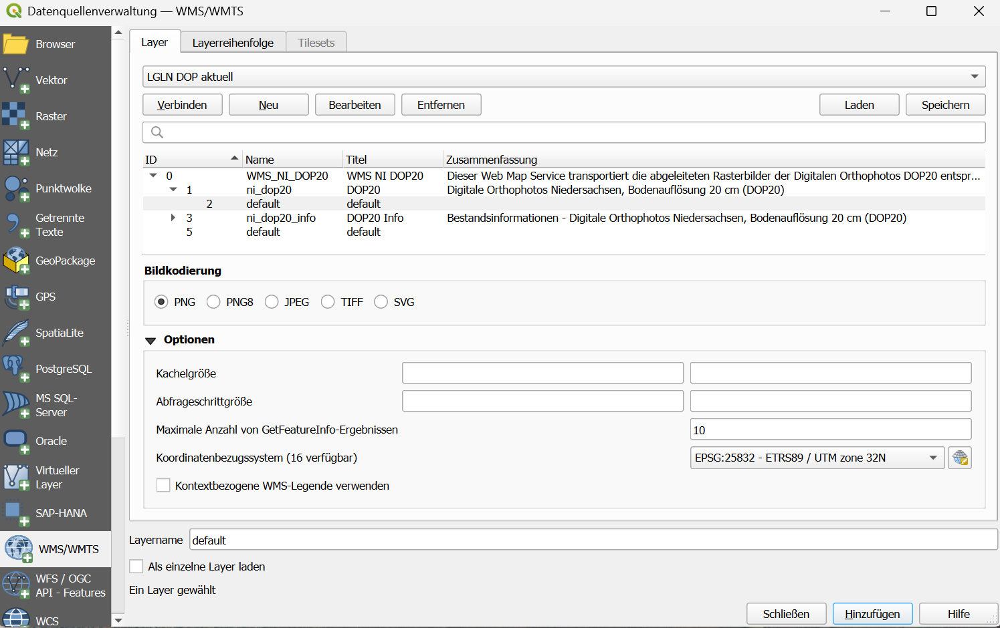
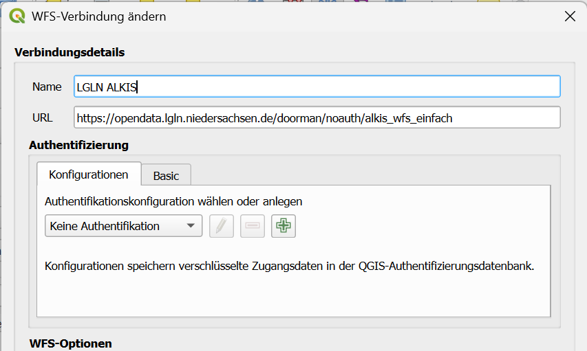

4 Lerneinheit 03: Beschaffung von Geodaten für den Nordcampus Göttingen.
4.1 Lernziele & Aufgabenstellung
In der Lerneinheit 02 haben wir vorgestellt, wie Rasterdaten, welche als GeoTIF-Datei auf der Festplatte vorliegen, in ein QGIS-Projekt importiert und dargestellt werden können. Wenn größere Gebiete bearbeitete und / oder sehr hohe räumliche Auflösungen verwendet werden, kann dies sehr schnell zu einem hohen Zeitaufwand und Bedarf an lokalem Speicherplatz -und damit verbunden hohen Kosten für die Hardware- führen. Daher werden im GIS-Bereich zunehmende sogenannte Geodatendienste verwendet. Bei diesen Diensten werden die Daten auf zentralen Servern gespeichert und dem Nutzer einzelne Ausschnitte auf Anfrage ausgeliefert. Dieses Vorgehen bietet mehrere Vorteile:
Nur die in dem jeweiligen Moment notwendigen Daten werden temporär auf dem PC des Nutzers abgelegt
Die Datenverwaltung erfolgt zentral durch den Betreiber des Geodatendienstes
Alle Nutzer arbeiten mit einem einheitlichen Datensatz
Aktualisierungen der Daten können einfach an alle Nutzer ausgespielt werden
In der Übung sollen aktuelle Daten für den Nordcampus, Göttingen dargestellt werden. Dazu sollen die unterschiedlichen Angeboten des Open-Data Niedersachsen Portals des LGLN genutzt werden.
Lernziele
Die Studierenden sollen:
- die unterschiedlichen Schnittstellen von Geodatendienste kennenlernen
- Raster- und Vektordaten als Geodatendienst in QGIS importieren
- Eigenschaften von Geodatendiensten in QGIS untersuchen
Aufgaben
Laden sie ein aktuelles Luftbild des Nordcampus Göttingen herunter um eine CIR-Darstellung anzulegen.
Binden sie das aktuelle Ortholuftbildmosaik des LGLN als WMS-Service ein
Fügen sie die Flurstückskarten als WFS-Dienst ein
Fügen sie als Hintergrund die Basemap.de als Vektor-Kacheln hinzu.
4.2 Aufgabe 0: Anlegen eine neuen QGIS-Projektes
Folgen sie der Anleitung aus Section 2.3 um eine neue Ordnerstruktur und ein neues QGIS-Projekt für LE03 anzulegen.
4.3 Aufgabe 01: Download und CIR-Darstellung einesOrtholuftbildes des Nordcampus
Das Landesamt für Geoinformation und Landesvermessung Niedersachsen (LGLN) stellt über die OpenGeoDate.NI Plattform offene amtliche Geodaten kostenfrei zur Verfügung. Ein Produkt sind die Digitalen Orthophotos (DOP). Diese können im Viewer des Portals angezeigt und ausgewählt werden.

Nutzen sie den LGLN OpenData-Viewer um die Kachel (325665712), die dieses Gebiet abdeckt auszuwählen und das RGBI Bild herunterzuladen. Laden sie zusätzlich die Metadaten als XML-Datei herunter und speichern sie beides in ihrem Projektordner unter “daten”. Importieren sie die GeoTIF-Datei als Rasterbild in ihr QGIS-Projekt und stellen sie es als CIR-Falschfarbenbild dar (siehe dazu auch LE02 Section 3.5 . Nutzen sie anschließend das Metadatenfile um folgende Fragen zu beantworten:
Fragen:
An welchem Tag wurde die Luftbildaufnahme gemacht?
Welche Kamera wurde für die Luftbildaufnahme verwendet?
Welches Koordinatenreferenzsystem haben die Rasterbilder?
Welche räumliche Auflösung haben die Bilder?
Welche radiometrische Auflösung haben die Bilder?
Welche spektrale Auflösung haben die Bilder?
4.4 Aufgabe 02: Einbinden von WMS-Diensten
Wie sie in dem OpenData-Viewer erkennen können, bräuchte es zur vollständigen Abdeckung des gesamten Göttinger Stadtwaldes über 35 Ortholuftbildkacheln, was einem Downloadvolumen von ca. \(35*500=1,7GB\) entsprechen würde. Für eine reine Darstellung z.B. als Hintergrundkarte oder zur Abgrenzung der Waldgrenzen ist das ein erheblicher Aufwand.
Das LGLN-OpenData Portal bietet neben dem Downloaddienst auch verschiedene Geodatendienste an. Für die reine Darstellung der Bilder kann ein sogenannter Web Mapping Service (WMS) genutzt werden. WMS-Dienste übertragen bereits gerendertet Bilder. Das bedeutet, dass die original Daten auf dem Server verbleiben und dort alle Einstellungen bzgl. der Symbolisierung und der Farbdarstellung zentral festgelegt werden. Der Nutzer erhält dann bereits gerenderte Bildausschnitte und kann die Darstellung z.B. der einzelnen Farbkanäle nicht mehr ändern. Der Vorteil ist, dass so wesentlich kleinere Datenmengen übertragen werden müssen.
Zum einbinden von Geodatendiensten wird zunächst die URL mit den Geodatendienst benötigt. Sie finden diese URL unter WMS auf der Beschreibung der Ortholuftbildprodukte auf der LGNL-Seite.
Anschließend nutzen sie in QGIS die Datenquellenverwaltung:
Layer → Datenquellenverwaltung → WMS → neu

Nachdem die Verbindung angelegt wurde, kann QGIS sich mit dem Server verbinden und die Layer können ausgewählt und dem Projekt hinzugefügt werden.

Wenn sie sich tiefergehend mit den technischen Details der STAC implementierung beim LGLN auseinandersetzen möchten empfehle ich den Vortrag von Katrin Pinkert und Ralf Wohlfart auf der FOSSGIS 2024:
Frage:
Vergleichen sie die Pixelwerte eines ausgewählten Pixels in dem WMS- und dem Geotifflayer.
4.5 Aufgabe 03: Einbinden der Flurstücksgrenzen als WFS-Dienste
Nachdem Einbinden der Ortholuftbilder, sollen weitere Geodaten in Form von Vektordaten in das Projekt eingebunden werden. Als Beispiel möchten wir die amtl. Flurstücksgrenzen aus dem Amtlichen Liegenschafts Kataster Informationssystems (ALKIS) nutzen. Diese Daten werden vom LGLN als Web Feature Service (WFS) bereitgestellt. Im Gegensatz zu den WMS-Diensten werden bei WFS keine vorher gerenderten Bilder, sondern die originalen Vektordaten übertragen. Das ermöglicht es den Stil anzupassen und eigenen Geographische Prozessierungen z.B. Buffer, Verschneidungen etc. durchzuführen.
Auf der ALKIS-Produktseite wird das Produkt vorgestellt. Hier sind auch die URLs für den WFS-Service zu finden. Für die Übung reicht der vereinfachte WFS vollkommen aus.
Zum Einbinden des WFS gehen wir wie folgt vor:
Layer → Datenquellenverwaltung → WFS / OGC API → neu
In dem Menü kann dann die korrekte URL des Dienstes eingetragen werden

Nachdem die Verbindung angelegt wurde kann QGIS sich mit dem WFS-Server verbinden und die zur Verfügung stehen den Layer abrufen
4.6 Aufgabe 04: Hintergrundkarte als Vektor-Kacheln
Als Hintergrund Karten wollen wir einen zusätzlichen Geodatendienst in Form von Vektor-Kacheln nutzen. Basemap ist eine Kartengrundlage die auf amtlichen Daten basiert und kostenfrei von der Arbeitsgemeinschaft der Vermessungsverwaltungen der Länder der Bundesrepublik Deutschland (AdV) zur Verfügung gestellt wird. Um diese zu verwenden kann die Verbindungseinstellung per XML-Datei in QGIS importiert werden. Laden sie sich dazu folgende XML-Datei herunter und speichern sie die Datei lokal auf ihrem Rechner:
https://basemap.de/data/produkte/web_vektor/sonstiges/basemap_de_Web_Vektor_qgis_connection.xml
Anschließend nutzen sie die XML-Datei um die Verbindung anzulegen:
Layer → Datenquellenverwaltung → Vektorkachel -> laden
Es wird eine neue Datenquelle “basemap.de Farbe” angelegt, die dem Projekt hinzugefügt werden kann.
https://basemap.de/produkte-und-dienste/web-vektor/
4.7 Aufgabe 05: Sicher der Nutzerprofile
Sie haben nun mehrere neue Datenquellen angelegt. QGIS speichert diese Datenquellen in ihrem Nutzerprofil. Beim nächsten Start von QGIS können diese Quellen wieder verwendet werden. Daher ist jetzt ein guter Zeitpunkt die Kopie ihres Nutzerprofils erneut zu sichern. Folgen Sie dazu der Anleitung in LE01 Section 2.2.4